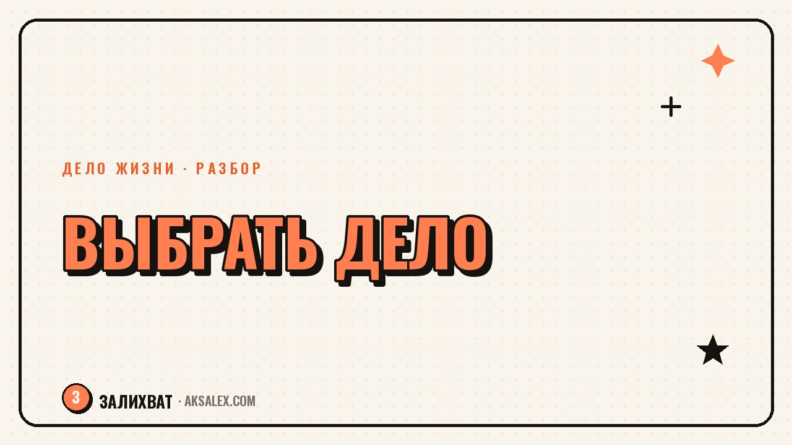

Как выбрать одно дело, если интересно всё

Есть люди, которым скучно уже через месяц в одном деле, и люди, которым хочется попробовать сразу пять направлений одновременно. Со стороны это выглядит как несерьёзность, а изнутри - как настоящая мука: вроде бы энергии и идей много, а выбрать одно направление и довести его до результата не получается. Дело не в том, что тебе чего-то не хватает, а в том, что подход «выбери одно и иди только туда» не всем подходит одинаково.
Почему трудно выбрать одно дело, если нравится всё
Часто за широким интересом стоит не легкомыслие, а живое любопытство и способность быстро учиться новому. Проблема начинается там, где общество требует узкой специализации: «найди своё призвание» звучит так, будто оно одно, а их явно несколько.
Второй источник трудности - страх, что выбор одного направления закроет двери во все остальные навсегда. На деле выбор дела на год или два - не пожизненный приговор, а рабочая гипотеза, которую можно пересмотреть.
Чем опасно вечное распыление между интересами
Проблема не в количестве интересов, а в том, что ни один не доводится до момента, когда виден реальный результат. Новое направление даёт всплеск энергии в начале, а потом наступает скучная рутина - и именно тогда человек чаще бросает и уходит в следующую новую идею.
- Нет направления, в котором накопился заметный опыт
- Доход остаётся нестабильным из-за постоянных стартов с нуля
- Растёт ощущение, что ты «ничего не довёл до конца»
- Трудно отвечать на простой вопрос «чем ты занимаешься»
Как сузить круг: вопросы к себе и упражнения
Вместо вопроса «что мне больше нравится» попробуй спросить себя, в каком деле ты готов пережить скучный этап рутины. Любопытство легко находит новое направление, а вот готовность терпеть монотонность после первого всплеска интереса - более честный фильтр.
Три вопроса для разбора
- Какое из направлений даёт деньги или результат быстрее остальных
- В каком из них накопился самый большой опыт за прошлые годы
- Какое направление ты выберешь, если нужно продержаться в нём год без смены
Выбрать дело на год - это не отказ от остальных интересов навсегда, а честная ставка на то, что сейчас даст больше опыта и результата.
Подходы к выбору дела при множестве интересов
| Подход | В чём суть | Кому подходит |
|---|---|---|
| Один фокус на год | Выбираешь одно направление и намеренно откладываешь остальные | Тем, кто готов к дисциплине ради результата |
| Портфельная занятость | Два-три направления идут параллельно, но в разных ролях | Тем, кто устаёт от монотонности в одном деле |
| Пробный период | Берёшь направление на 2-3 месяца, потом честно оцениваешь | Тем, кто не готов решать навсегда с первого раза |
| Основное плюс хобби | Одно дело кормит, второе остаётся для души без давления | Тем, кому важна стабильность и творческая свобода |
Нет универсально правильного подхода - важно выбрать тот, который честно учитывает твой характер, а не тот, что звучит убедительнее в книге про успех. Портфельная занятость, например, требует больше организованности, а один фокус - больше терпения к скуке.
Как пробовать, не бросая всё сразу
Хорошая стратегия - не бросать текущую работу в момент выбора нового направления, а выделить на пробу фиксированное время: например, вечера три раза в неделю на два месяца. Это снимает давление «а что если это ошибка на всю жизнь».
В конце пробы честно оцени не только «понравилось ли», а «готов ли заниматься этим, когда пройдёт новизна». Если да - постепенно увеличивай время на это направление и сокращай остальные.
Частые ошибки при выборе дела среди множества интересов
Частая ошибка - ждать стопроцентной уверенности перед стартом, которая никогда не наступает. Вторая - выбирать дело по тому, что сейчас модно или прибыльно у других, а не по тому, что реально держит твой интерес дольше месяца.
- Не откладывай выбор до идеальной уверенности - её не будет
- Не выбирай только по чужому примеру успеха
- Не бросай пробный период раньше срока из-за первой скуки
- Не превращай выбор дела в единственный решающий момент жизни
Частые вопросы
Как понять, какое дело из многих интересов выбрать первым?
Начни с того, где уже есть накопленный опыт или быстрее виден результат - так проще оценить направление за разумный срок. Остальные интересы при этом не исчезают, их можно вернуть позже.
Нормально ли менять направление несколько раз в жизни?
Да, это обычная практика, особенно если каждый раз ты доводишь дело до какого-то результата перед сменой. Проблема не в смене направлений, а в том, когда ни одно не доведено дальше самого начала.
Что делать, если после пробного периода всё ещё не ясно?
Продлить пробу на конкретный срок с ясным критерием оценки, а не тянуть неопределённость бесконечно. Честный вывод «не моё» тоже результат - он экономит время для других направлений.
Можно ли совмещать два направления одновременно без вреда для обоих?
Можно, если у них разные роли - например, одно даёт стабильный доход, второе развивается медленнее для души. Сложнее, если оба требуют полной отдачи одновременно - тогда придётся выбирать приоритет хотя бы на период.
Как быть, если широта интересов мешает на собеседованиях и в работе?
Сформулируй для себя и собеседника одну понятную формулировку текущего фокуса, даже если внутри у тебя несколько направлений. Остальные интересы можно описывать как дополнительные навыки, а не как разброс без системы.
Раз тема оказалась полезной, вот что почитать следующим. Готовим разговор о повышении с нейросетью: аргументы, репетиция диалога, ответ на возражения начальника.
Читать статью →а не вручную